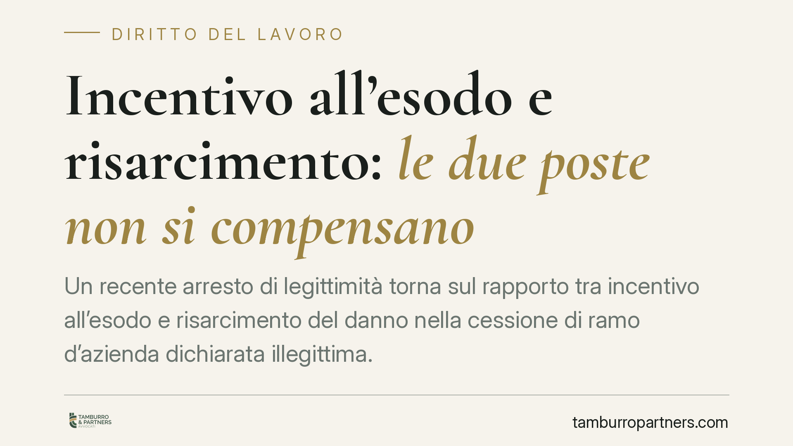

Incentivo all'esodo e risarcimento: le due poste non si compensano
Un recente arresto di legittimità torna sul rapporto tra incentivo all'esodo e risarcimento del danno nella cessione di ramo d'azienda dichiarata illegittima. La somma incassata dal lavoratore per lasciare il posto non abbatterebbe il risarcimento dovuto dal datore cedente: manca il nesso causale diretto con l'illecito. Il tema incide sulla strategia di chi riceve una proposta di esodo.

Il caso e l'orientamento (da verificare)
La questione riguarda il trattamento dell'incentivo all'esodo quando la cessione di un ramo d'azienda viene dichiarata illegittima e il lavoratore chiede il risarcimento al datore di lavoro cedente (l'impresa originaria, non quella che ha acquisito il ramo).
Secondo un orientamento attribuito alla Corte di Cassazione (indicata come sent. 4665/2026), l'incentivo percepito non andrebbe sottratto dal risarcimento. La ragione: le due somme rispondono a titoli diversi e manca un nesso causale diretto tra l'incentivo e l'illecito del cedente.
> Avvertenza. Gli estremi di questa pronuncia (sezione, data di deposito, numero) non risultano, allo stato, verificabili attraverso le banche dati ufficiali, anche in ragione della datazione prospettica. Il contenuto va quindi trattato come *orientamento da confermare* sulla massima ufficiale prima di qualunque utilizzo operativo.
Inquadramento normativo
L'art. 2112 c.c. disciplina il trasferimento d'azienda e di ramo d'azienda. In caso di cessione, il rapporto di lavoro prosegue con il cessionario (chi acquista) e il lavoratore conserva i diritti maturati. Quando la cessione è dichiarata illegittima — ad esempio perché il "ramo" non aveva autonomia funzionale — il rapporto si considera mai interrotto con il cedente, che può essere tenuto a risarcire il danno (tipicamente le retribuzioni perdute).
Il nodo tecnico è la compensatio lucri cum damno: il principio per cui, nel quantificare il danno, si scomputa il vantaggio economico che il danneggiato ha tratto dal medesimo fatto illecito. Il punto decisivo è proprio il "medesimo fatto": la compensazione opera solo se il vantaggio deriva, con nesso causale diretto, dallo stesso evento che ha generato il danno.
L'incentivo all'esodo ha natura transattiva o negoziale: è il corrispettivo pattuito per la risoluzione consensuale del rapporto. Il risarcimento dovuto dal cedente ha invece natura risarcitoria e discende dall'illegittimità della cessione. Titoli distinti, origine distinta: secondo l'orientamento in esame, la detrazione non è ammessa.
Implicazioni pratiche
Per il lavoratore che abbia accettato un incentivo all'esodo dal cessionario, la differenza è rilevante. Se la cessione viene poi accertata come illegittima, egli potrebbe cumulare l'incentivo già incassato con il risarcimento dovuto dal cedente, senza vedersi decurtare la seconda posta della prima.
Molto dipende, però, dalla formulazione delle clausole dell'accordo di esodo. Una rinuncia ampia a ogni pretesa verso il cedente, o una clausola che qualifichi l'incentivo come comprensivo di poste risarcitorie, può modificare radicalmente lo scenario. Il contenuto dell'atto sottoscritto pesa più della sua intestazione.
Va inoltre considerata la variabile tempo. Nei casi di trasferimento d'azienda ex art. 2112 c.c., l'impugnazione della cessione è soggetta al doppio termine di decadenza previsto dall'art. 32 della L. 183/2010: 60 giorni per l'impugnazione stragiudiziale e ulteriori 180 giorni per il deposito del ricorso o la comunicazione della richiesta di conciliazione o arbitrato. L'applicabilità in concreto va verificata caso per caso, in base alla data di decorrenza rilevante. Lasciar maturare la decadenza può precludere l'azione a prescindere dalla fondatezza nel merito.
Cosa fare in concreto
- Verificare subito i termini. Individuare la data di decorrenza e controllare la tenuta del doppio termine ex art. 32 L. 183/2010 (60 + 180 giorni) prima che la decadenza maturi.
- Leggere le clausole dell'incentivo. Accertare se l'accordo contiene rinunce, transazioni o qualificazioni della somma che possano incidere sulle pretese verso il cedente.
- Conservare la documentazione. Lettera di cessione, accordo di esodo, buste paga ante e post trasferimento, comunicazioni aziendali.
- Sottoporre l'accordo a verifica. È opportuno far esaminare il testo da un professionista prima della sottoscrizione, per comprenderne gli effetti sulle future pretese.
- Attendere la conferma della massima ufficiale. Trattandosi di orientamento da verificare, è prudente non costruire scelte definitive sul solo dato di stampa.
Disclaimer
Contributo informativo a cura di Tamburro & Partners Avvocati. Non costituisce parere legale.
Ogni storia di lavoro ha i suoi tempi.
Se gestisci HR e vuoi un confronto su contenzioso, ispezioni o licenziamenti, scrivi allo studio. Ti rispondiamo entro un giorno lavorativo.